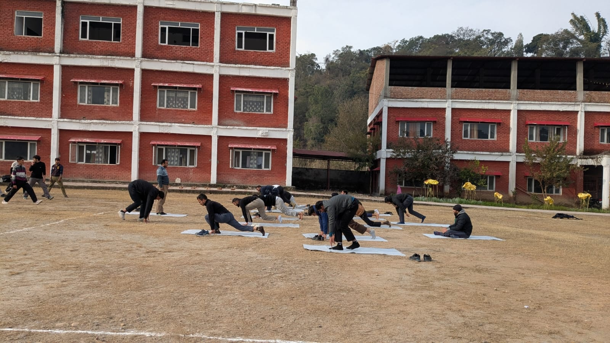
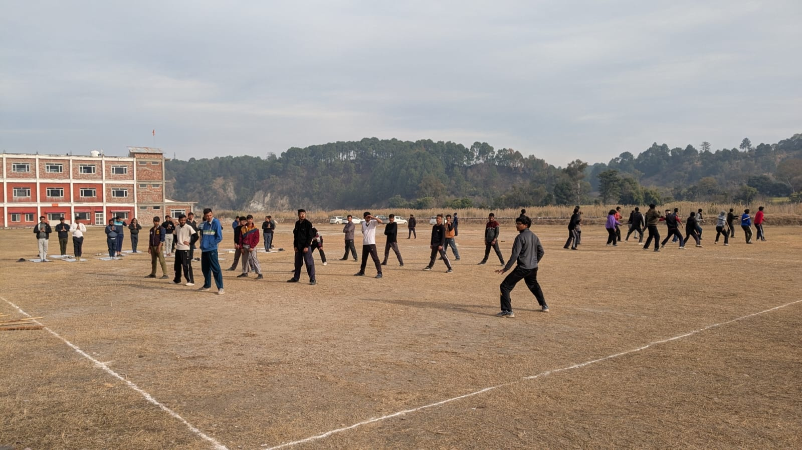
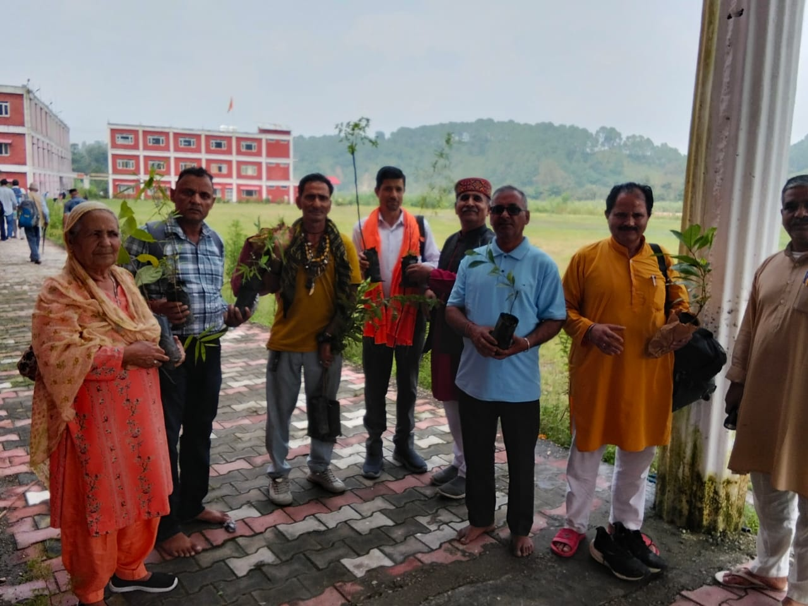
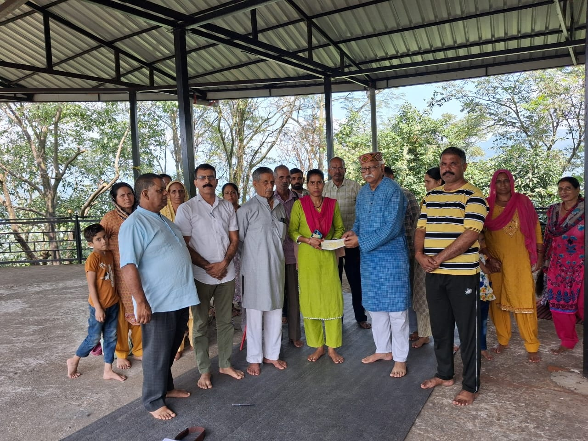
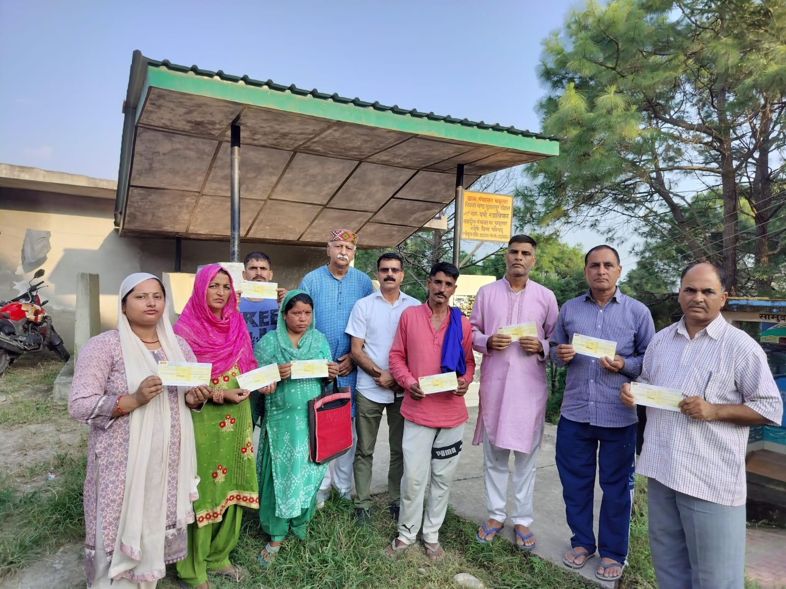
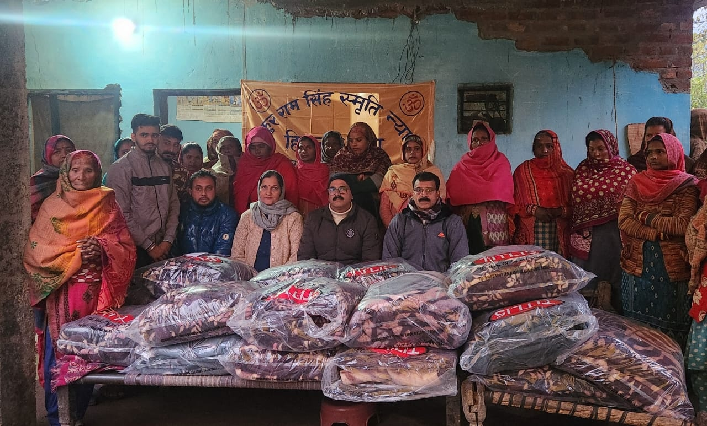
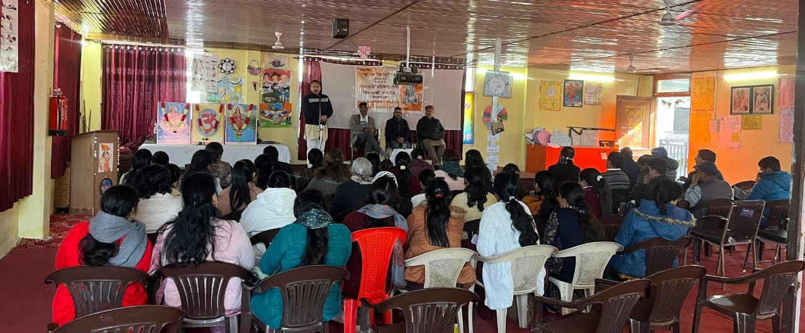

Activities
Detailed year-wise documentation of the Trust's major programmes during 2024–25.
Activities in 2025
01
Three-Day Personality Development Camp for Youth
A residential-style camp for 72 students from colleges and universities across Himachal Pradesh, focused on communication, confidence building, leadership, discipline, self-awareness and value-based learning.
व्यक्तित्व निर्माणं, राष्ट्रनिर्माणस्य आधारः।
02
Kabaddi Competition on National Youth Day
A vibrant kabaddi competition with 13 participating teams, encouraging physical fitness, teamwork, discipline and healthy competitive spirit among the local youth.
क्रीडा बलं, क्रीडा अनुशासनं च वर्धयति।
03
Seminar on Health Challenges and Indian Life Style
An awareness seminar led by Sh. Sanjeevan Kumar Ji, highlighting preventive healthcare, lifestyle-related health challenges and the continuing relevance of Indian wellness traditions.
आरोग्यं परमं भाग्यं, स्वास्थ्यं सर्वार्थसाधनम्।
04
Promotion of Traditional Rural Sports – Dangal (Chhinj)
The Trust supported a traditional wrestling event with ₹21,000, helping preserve rural sporting culture and encourage community participation rooted in Himachali heritage.
परम्परा रक्षणं, संस्कृतिसंवर्धनं च।
05
Blood Donation-cum-Cow Health Camp
A joint welfare initiative with medical and veterinary partners, resulting in 32 units of blood donated and treatment provided to 47 cows with active community participation.
जीवसेवा, गोसेवा, समाजसेवा।
06
Seminar on Women Empowerment, Health & Hygiene
A collaborative seminar with the District Health & Family Welfare Department to build awareness around women’s health, hygiene, preventive care and empowerment through education.
नारी सशक्तीकरणं, समाजसबलतायाः आधारः।
2025 — Field Documentation
From the Field



.jpeg)


Activities in 2024
01
Seminar on “Samajik Samrasta” (Social Harmony)
A seminar promoting social harmony, mutual respect and inclusive community development, encouraging unity, equality and collective responsibility among all sections of society.
समानता, सौहार्दं, सहयोगश्च समाजस्य बलम्।
02
Celebration of International Yoga Day
A community yoga programme and awareness session highlighting physical fitness, mental well-being, emotional balance and the daily relevance of yoga in modern life.
योगः चित्तवृत्तिनिरोधः।
03
Tree Plantation Drive
A plantation initiative featuring herbal, medicinal and indigenous species, strengthening environmental responsibility and awareness around sustainable living.
माता भूमिः पुत्रोऽहं पृथिव्याः।
04
Independence Day Celebration
A patriotic gathering to honour freedom fighters and inspire unity, national pride and social responsibility among trust members and the local community.
वन्दे मातरम्, जयतु भारतम्।
05
Flood Relief and Assistance to Disaster-Affected Families
Rapid humanitarian relief provided to flood-affected families, with total financial assistance of ₹5,35,000 distributed among nearly 20 needy households across affected districts.
आपत्काले सहाय्यं, मानवधर्मस्य शोभा।
06
Distribution of Blankets to Underprivileged Families
Blankets distributed to 26 underprivileged families in Nadaun Block to provide immediate winter relief and comfort during severe seasonal conditions.
उष्णता दानं, करुणाया रूपम्।
2024 — Field Documentation
From the Field


